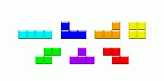

第一行三个整数n,m,k表示客厅长度、宽度和柱子数量。之后的k行，每行两个整数x,y(0<=x<n,0<=y<m)，表示柱子在第x行第y列。
俄罗斯方块是一款风靡全球的电视游戏机和掌上游戏机游戏，它由俄罗斯人阿列克谢·帕基特诺夫发明，故得此名。俄罗斯方块的基本规则是移动、旋转和摆放游戏自动输出的各种方块，使之排列成完整的一行或多行并且消除得分。由于上手简单、老少皆宜，从而家喻户晓，风靡世界。
俄罗斯方块共有以下七种，这些方块可以旋转但不能翻转。

现在小N家中刚好要装修客厅，他希望使用俄罗斯方块来铺地板。小N家的地板大小为n*m。他想知道他共有多少种铺地板的方法。要求这些俄罗斯方块不能重叠，且要将地板刚好铺满。
另外在小N家的客厅中还有一些柱子，显然在柱子底下是不能铺地板的。
第一行三个整数n,m,k表示客厅长度、宽度和柱子数量。之后的k行，每行两个整数x,y(0<=x<n,0<=y<m)，表示柱子在第x行第y列。
输出一个整数，表示方案数mod (10^9+7)的值
3 3 1
1 1
4
k<=n*m,N<=30,M<=7